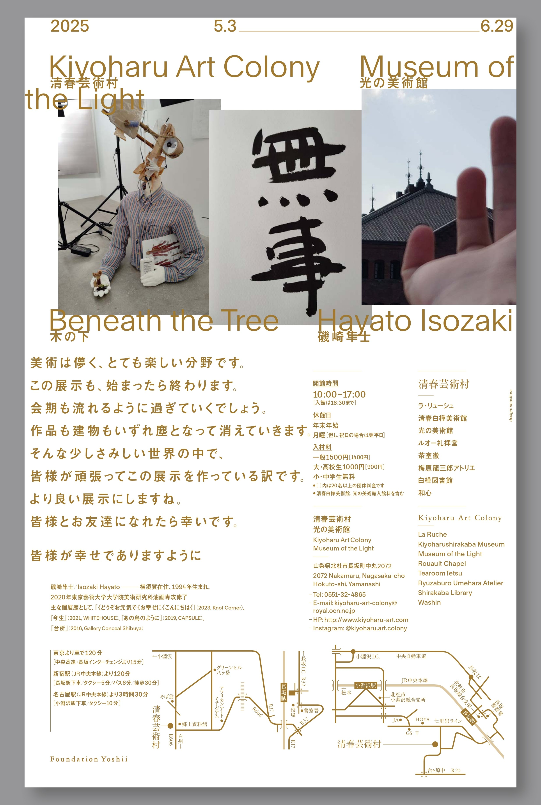

Chapter 02
広報・ブランド
プレスリリースからチラシ入稿まで、 アートの「伝わるかたち」をつくる。
Exhibition Flyer — Beneath the Tree

Front
表面 — 展覧会名

Back
裏面 — アーティストステートメント・会場情報
制作の経緯
磯崎隼士個展「Beneath the Tree 木の下」のための広報チラシ。
デザインはneucitoraに発注し、
入稿・印刷・配布の進行管理を担当。
チラシは単なる作品ではなく、社会と展覧会をつなぐ『機能を持った情報伝達ツール』です。
作家の情熱（サイン）は尊重しつつも、広報ツールとしての本来の役割（文字情報の可読性）と美術館のブランドイメージを守るため、
即座に予備費を投入し再印刷を決断しました。クリエイターの熱量と、
社会への伝わりやすさのバランスを取る経験となりました。
担当範囲
デザイナーへのブリーフ・素材提供・校正確認・入稿ディレクション。
印刷所との納期調整および配布先リストの管理。
再印刷時の迅速な意思決定（予備費投入 ・ 特急対応の判断）も含む。
PR Work
磯崎隼士個展 プレスリリース・テキスト
自分が担当した展覧会として、プレスリリースの執筆と展覧会テキスト全体の設計を行った。アーティストと複数回ヒアリングを重ね、ステートメント・壁面テキスト・プレスリリースを一貫したトーンで整えた。
- プレスリリース執筆（メディア向け）
- アーティストステートメントの構成補佐・和文整理
- 壁面テキスト：来場者の読解速度を意識した文字数・改行設計
清春芸術村 Instagram 広報ディレクション
桜シーズンに合わせた美術館・展覧会情報の発信を担当。現地スタッフが撮影した写真の中から掲載素材を選定し、投稿タイミング・キャプションの方針を決定した。
- 写真選定・投稿タイミングのディレクション
- 桜シーズンの広告と展覧会情報を組み合わせた季節連動発信
ナディッフアパート Instagram・EC 商品掲載
CCC在籍時、ナディッフアパート（現代美術特化書店）のInstagramにて書籍・グッズの商品写真撮影と掲載を担当。
- 商品写真の撮影・編集・Instagram掲載
- ECサイトへの作品・商品情報登録
Tools & Skills
進行管理・スケジュール管理
関係者調整
Adobe Illustrator
Photoshop
入稿ディレクション
プレスリリース執筆
コピーライティング